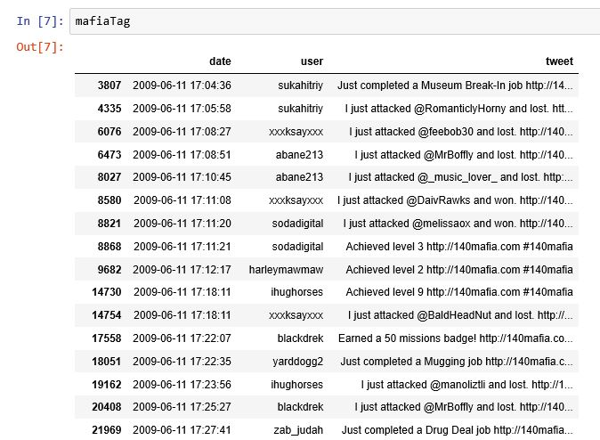
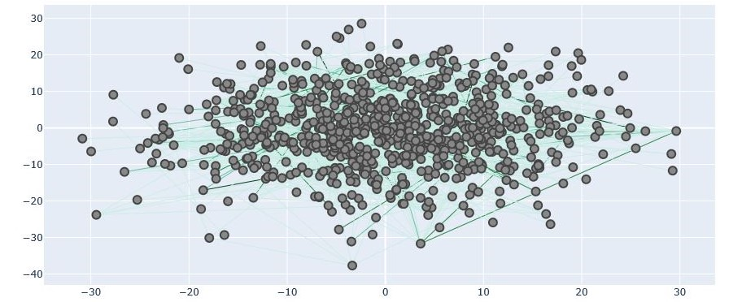
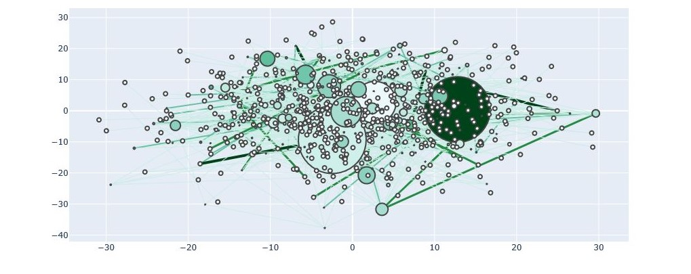
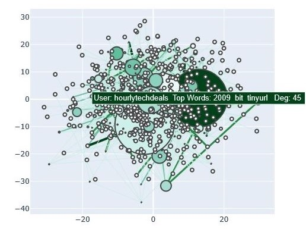

Social Network Analysis
This project looks at tweets containing the hashtag #140mafia and the underlying social network that is formed.
#140Mafia, or Spymaster as it's better known, is a 2009 game that is played online with game notifications posted on Twitter. A data set of 120 000 tweets was uploaded into a pandas dataframe on jupyter notebook and filtered out for the #140Mafia hashtag. A social Network was built by assigning users to nodes with the networkx tool. A tweet with two users forms an edge, showing an interaction between two users in the game. The nodes and edges are used to form a Social Network Analysis graph.

The resulting graph gives us very few insights besides scale and connectivity of the network. There are a lot of users in this network but there is not a lot of interaction among peers. This is confirmed below using a Degree Distribution Histogram.
Measures of Centrality are used to expand on the social network analysis. The size of each node increases with greater betweenness centrality, indicating a node that connects a large number of other nodes. The colour of the node gets darker with higher degree centrality, indicating the degree or number of nodes that the user interacted with. the thickness of each edge/connection indicates the number of interactions between two nodes.

By looking at the node with the highest degree and betweeness centrality we can see that this is in fact a bot. Their top 3 key phrases show that they did not partake in the game. Further analysis would require eliminating these bots to get a more accurate understanding of the social network... however one key take away is that there is no real node with a high degree centrality or betweenness centrality. At least for this #140Mafia game, there is no mob boss.